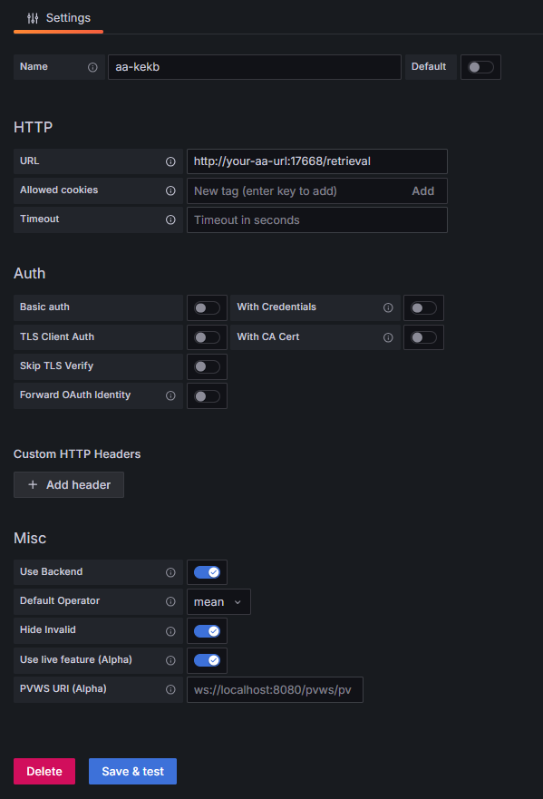

Configuration¶
Add New Archiver Appliance Datasource¶
After installing plugin you can add Archiver Appliance datasource.
To add Archiver Appliance datasource, follow the below steps.
Open
Data Sourcesin the side menu.Click
Add data source.Select
ArchiverAppliacnein the list.

Please refer How to add a data source for more information.
Datasource Settings¶

HTTP¶
URL: set
retrieval urlend with retrieval.Access: controls how requests to the data source will be handled. Only
Servermode is tested in this plugin.Server: Grafana backend/server forwards the requests to the Archiver Appliance server.
Browser: directly access to the Archiver Appliance server from the browser.
Whitelisted Cookies: no need to configure.
Auth¶
Basically, no need to configure.